El diagrama de clases con Dia
En la página anterior hemos usado IntelliJ para leer un modelo partiendo del código, que es el camino de la ingeniería inversa. Ahora toca el camino contrario, el del diseño: construir el diagrama de clases a partir de un enunciado, antes de que exista una sola línea de programa. Para eso hace falta una herramienta donde dibujar sea cómodo, y la que usaremos es Dia.
Dia es un editor de diagramas libre y gratuito, publicado bajo licencia GPL y disponible para Linux, Windows y macOS. En Linux se instala desde los repositorios de la distribución con un solo comando, sudo apt install dia, y en Windows y macOS hay instaladores descargables. Su interés para nosotros está en que trae una hoja de formas UML en su caja de herramientas estándar, sin necesidad de instalar nada más, y esa hoja cubre mucho más que las clases: además de las formas para el diagrama de clases (Class, Generalization, Association, Realizes, Dependency, Note, paquetes), incluye las que se necesitan para los diagramas de comportamiento (Actor, Use case, Lifeline, Object, Message, State, Activity, Branch, Fork/Union y Transition). La misma herramienta sirve, por tanto, para todo el bloque de modelado.
Hay una segunda razón para elegirla. Dia guarda los documentos en formato .dia, que es texto XML, de modo que un diagrama se puede versionar con Git y comparar entre versiones, igual que el código. Un diagrama guardado como imagen no permite saber qué ha cambiado; un .dia sí.
El enunciado del ejemplo
El punto de partida de cualquier diagrama de clases es siempre un texto, no una pantalla. Antes de abrir la herramienta hay que leer el enunciado con calma y subrayar los sustantivos y los verbos que aparecen, porque los sustantivos suelen esconder clases y los verbos suelen esconder relaciones.
Enunciado del ejemplo
Las facturas de los proveedores de una empresa pueden ser de proveedores de servicios o de proveedores de productos o materiales. Cada una de las facturas, sea del tipo que sea, tiene en común:
- El número de la factura.
- La fecha de la factura.
- El importe total, que se calcula de manera diferente en las unas que en las otras.
- Los datos del cliente, que son el NIF y el nombre, y que tienen que encontrarse en una clase aparte.
- El detalle de la factura, tanto si es de materiales como si es de servicios.
Tanto para las facturas de servicios como para las facturas de productos o materiales hay que tener guardada la última factura emitida, para tener presente el número de factura. Hay una lista de servicios con la descripción y el precio por hora de cada uno. En el detalle de las facturas tiene que haber:
- En las facturas de servicios, una lista de servicios con la fecha de prestación, el número de horas dedicadas y el precio por hora de cada servicio. En una factura puede haber más de una prestación del mismo servicio.
- En las facturas de productos, y para cada producto (en cada factura hay al menos uno), la descripción, el precio unitario y la cantidad.
Releer el enunciado antes de dibujar ahorra mucho tiempo después, porque casi todos los errores de un diagrama de clases vienen de haber modelado algo que el texto decía de otra manera.
Dibujar el modelo en Dia
El manejo básico de Dia es el de cualquier editor de diagramas vectoriales. La ventana tiene un lienzo central y, a la izquierda, una caja de herramientas organizada en hojas de formas: en la parte superior se elige la hoja y debajo aparecen las formas disponibles. Para trabajar con UML hay que seleccionar la hoja UML, que viene incluida en la instalación estándar. A partir de ahí, el procedimiento es siempre el mismo: se arrastra una forma al lienzo y se sueltan las veces que haga falta.
La figura siguiente muestra la ventana de Dia con la hoja UML seleccionada en la caja de herramientas.
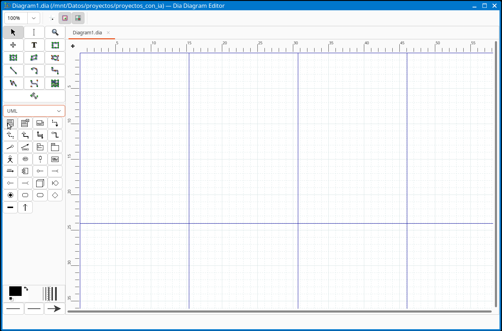
Conocer el catálogo completo de formas de esa hoja ahorra bastante tiempo, porque cada símbolo de UML tiene la suya y no hay que dibujar ninguno a mano. Estas son las que interesan para este apartado:
| Forma de la hoja UML | Para qué sirve |
|---|---|
| Class | Crear una clase, con sus atributos y sus operaciones en la ventana de propiedades |
| Generalization | Trazar una herencia, desde la clase hija hasta la clase madre |
| Association | Trazar una asociación; desde sus propiedades se configura la multiplicidad, el papel, la navegabilidad y el tipo de agregación de cada extremo |
| Realizes e Implements | Marcar que una clase cumple el contrato de una interfaz |
| Dependency | Trazar una dependencia, en trazo discontinuo |
| Note y Constraint | Añadir una aclaración o una restricción escrita junto a un elemento |
| Small package y Large package | Organizar el modelo en paquetes |
| Class stereotype icon | Añadir el icono de un estereotipo sobre una clase |
Y estas son las que se usarán en el apartado siguiente, lo que confirma que merece la pena aprender una sola herramienta para todo el bloque de modelado:
| Forma de la hoja UML | Para qué sirve |
|---|---|
| Actor y Use case | Dibujar los actores y los casos de uso de un diagrama de casos de uso |
| Lifeline, Object y Message | Dibujar los participantes, los objetos y los mensajes de un diagrama de secuencia o de comunicaciones |
| Initial/End state y State | Dibujar los estados y los nodos inicial y final de un diagrama de estados |
| Activity, Branch y Fork/Union | Dibujar las acciones, las decisiones y las bifurcaciones de un diagrama de actividades |
| Transition | Unir dos estados o dos acciones |
El catálogo completo de la hoja incluye además las formas para componentes y nodos de despliegue, que se usan en los diagramas de estructura de otros tipos y que no aparecen en este recorrido.
Para crear una clase se arrastra la forma Class. Al crearla, lo primero es escribir su nombre. El resto de sus propiedades se editan abriendo la ventana de propiedades de la forma, con doble clic sobre ella o desde el menú contextual, y esa ventana conviene conocerla porque es donde se hace casi todo el trabajo.
En la versión actual de Dia, la ventana se titula Properties: UML - Class y tiene cuatro pestañas: Class, Attributes, Operations y Templates. La primera recoge la identidad de la clase: el campo Class name, el Stereotype, un Comment que se usará después como documentación, y una lista de casillas entre las que están Attributes visible, Operations visible y la que interesa especialmente aquí, Abstract, que es la que marca la clase como abstracta y hace que su nombre se muestre en cursiva en el diagrama.
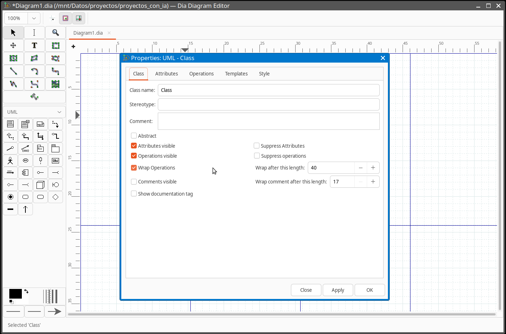
Las otras dos pestañas son las que dan contenido al modelo. En Attributes se añade un atributo por fila, indicando su nombre y su tipo, y en Operations se hace lo mismo con las operaciones. En las dos, cada elemento lleva asociada su visibilidad, que es lo que determina si en el diagrama aparecerá el símbolo -, el + o el #. Ese es el punto donde el modelo pasa de ser un dibujo a ser una descripción con significado: la visibilidad que se elija aquí es la que aparecerá en el rectángulo y la que después se trasladará al código.
Las relaciones se trazan con las formas de la misma hoja. Se arrastra la forma que corresponda (Generalization, Association, Realizes, Dependency) y se engancha cada extremo sobre la clase que debe unir; Dia resalta el punto de anclaje para indicar que la conexión va a quedar establecida. La información que acompaña a una relación no se escribe en el lienzo, sino en sus propiedades, y ahí está el detalle que más cuesta al principio: en la forma Association se configuran por separado los dos extremos, y en cada uno se indican el papel que juega la clase, su multiplicidad y si la asociación es navegable en ese sentido. El tipo de agregación se elige también desde ahí, y es lo que hace que aparezca el rombo vacío o el rombo relleno.
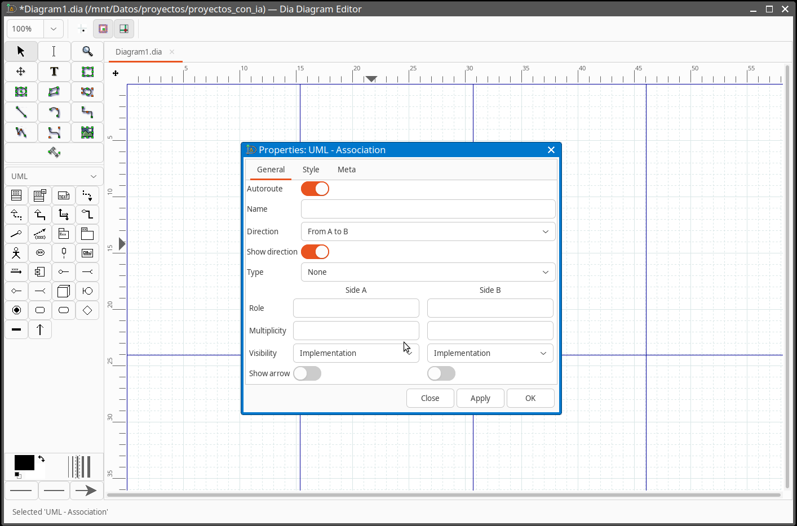
Sobre el aspecto de las ventanas
Dia está construido sobre GTK, así que el aspecto de sus ventanas depende de la versión instalada y del tema del sistema: los mismos diálogos se ven distintos en Ubuntu, en Windows o en macOS. Lo que no cambia es el procedimiento ni el contenido. Si al abrir un diálogo aparece otra distribución, lo que hay que buscar es siempre lo mismo: el nombre de la clase y la casilla Abstract en la pestaña de la clase, y las listas de atributos y de operaciones en las suyas, donde se indica el tipo y la visibilidad de cada uno.
Conviene guardar el documento con extensión .dia desde el primer momento, porque es el formato que conserva el diagrama como fuente editable. Para llevarlo a una memoria o a un documento de entrega, Dia puede exportar a varios formatos de imagen vectorial y de mapa de bits desde la opción de exportación del menú de archivo; el formato SVG es el más recomendable, porque no pierde calidad al ampliarlo.
Las decisiones del modelo
A continuación construimos el modelo del enunciado paso a paso, siguiendo el mismo orden en que se lee el texto y tomando, en cada parada, una única decisión de modelado: primero la herencia entre los tipos de factura, después los atributos comunes, luego el método que se calcula de forma distinta en cada hija, más tarde la relación con los datos del cliente, a continuación las dos clases que resuelven el detalle de las facturas y, por último, la relación que cierra el modelo.
Lo importante del recorrido no es el dibujo, sino las decisiones que se toman en cada paso y el motivo que las justifica. Casi todas ellas tienen una alternativa razonable que habría que descartar con un argumento: por qué el dato va en la clase madre y no en las hijas, por qué esta relación es una agregación y no una composición, o por qué hace falta una tercera clase donde parecía que bastaban dos. Un diagrama de clases sin esas justificaciones escritas es un dibujo; con ellas, es un documento de diseño que se puede revisar y discutir. Al terminar cada paso conviene volver al enunciado y comprobar que el modelo sigue diciendo exactamente lo que dice el texto, ni más ni menos.
La herencia entre las facturas
Analizando el enunciado aparece una frase decisiva: "cada una de las facturas de una empresa es, o bien una factura de servicios, o bien una factura de productos". Esa disyuntiva es la señal clásica de una generalización o herencia: la clase padre corresponde a Factura y las clases hijas a FacturaServicios y FacturaProductos. El razonamiento es el siguiente: hay una serie de datos y comportamientos que todas las facturas comparten, y hay otros que solo tienen sentido en un tipo concreto. Lo común sube a la clase madre; lo específico se queda en cada hija.
Empezamos creando las tres clases sueltas en el lienzo.
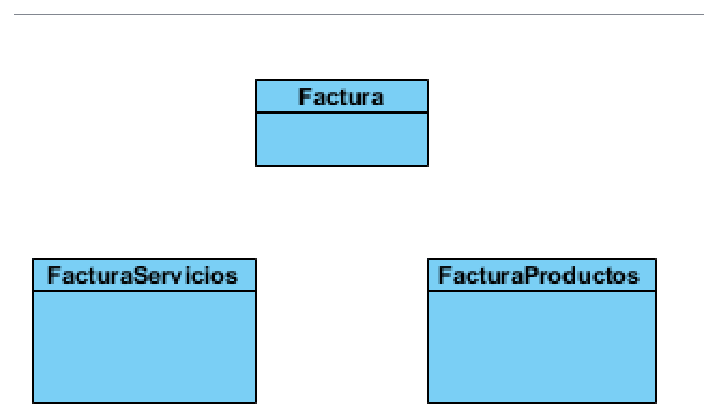
En este punto el modelo todavía no dice nada sobre la relación que existe entre ellas: son tres rectángulos sin conectar. Para establecerla hay que trazar una forma Generalization desde cada clase hija hasta la clase madre.
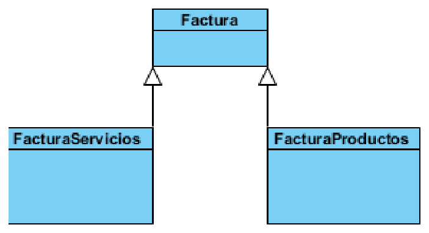
Con la generalización ya aplicada, las dos clases hijas quedan unidas a la clase madre mediante flechas con la punta triangular vacía que apuntan hacia arriba. La dirección de la flecha no es un detalle menor: sale siempre de la subclase y apunta a la superclase, porque lo que se está indicando es "soy un caso particular de". Dibujarla al revés invierte el significado del modelo y es uno de los errores más frecuentes al empezar.
Los atributos de una clase
Seguimos interpretando el enunciado, que nos dice que las facturas tienen en común el número, la fecha y el importe. De este modo, los atributos de la clase Factura son número, fecha e importe, cada uno con su tipo y su visibilidad.
La decisión de dónde colocar cada atributo no es automática, y aquí conviene detenerse. El enunciado dice "tienen en común", y esa palabra es la que manda el dato a la clase madre. Si el número se declarara en FacturaServicios y otra vez en FacturaProductos, habría dos campos con el mismo significado en dos sitios distintos, y cualquier cambio en su tipo o en su formato obligaría a acordarse de los dos. La herencia resuelve justo eso: lo común se escribe una sola vez, arriba, y las hijas lo reciben sin repetirlo.
La segunda decisión es la visibilidad, y la respuesta por defecto debería ser siempre la misma: privada. Los tres atributos de Factura son datos internos del objeto, y quien necesite leer o modificar el importe tendrá que hacerlo a través de los métodos que la propia clase ofrezca, que es donde se podrá controlar que el valor tiene sentido. Dejar un atributo público es prometer que cualquier parte del programa puede escribir en él sin pasar por ninguna comprobación, y esa promesa casi nunca conviene hacerla.
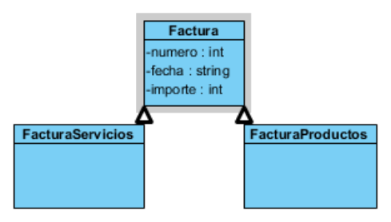
La clase Factura muestra ya sus tres datos, mientras que FacturaServicios y FacturaProductos siguen vacías, porque todavía no tienen nada propio. La herencia garantiza que la información se entienda de forma acumulativa: lo que está en la clase madre lo tienen todas las hijas sin necesidad de repetirlo, y ese es precisamente el ahorro que justifica haber creado la jerarquía.
El método abstracto del importe
El enunciado nos indica que el importe se calcula de manera diferente en unas facturas que en otras, es decir, que el cálculo será distinto para FacturaServicios y para FacturaProductos. Ese "de manera diferente según el tipo" es la señal de que el método debe declararse en la clase madre pero implementarse en cada hija. Así, calculoImporte() se define en Factura como un método abstracto, que devuelve un entero y del que la clase madre solo declara su firma.
En las clases hijas, ese método se sobrescribe, es decir, cada una declara su propia versión con la misma firma y con el cuerpo que le corresponde. En el diagrama, el método abstracto aparece en la clase madre en cursiva, y cada clase hija muestra su versión concreta.
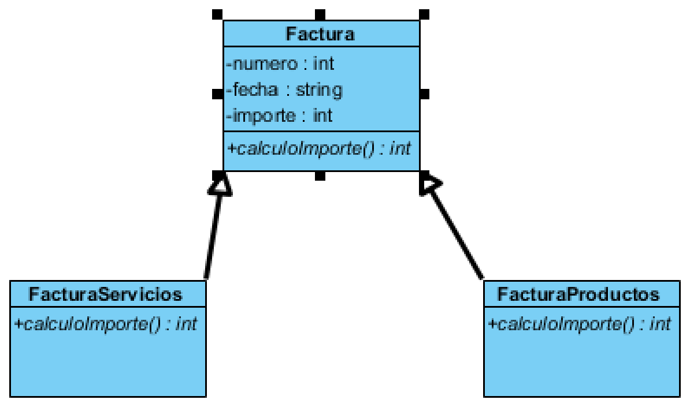
El resultado es el diagrama que aparece arriba: Factura con sus tres atributos y su operación calculoImporte() en cursiva por ser abstracta, y las dos clases hijas mostrando su propia versión de calculoImporte(), esta vez ya concreta. Cada hija implementará el cálculo a su manera, y el resto del sistema podrá invocar el método sin saber qué tipo concreto de factura tiene delante, que es el polimorfismo que ya estudiamos.
La agregación
El enunciado continúa explicando que los datos del cliente, que son el NIF y el nombre, tienen que estar en una clase aparte. Es necesario, por tanto, crear una nueva clase llamada DatosCliente, con sus atributos NIF y nombre, y unirla a Factura mediante una forma Association configurada como agregación, con su rombo vacío del lado de la factura y su multiplicidad.
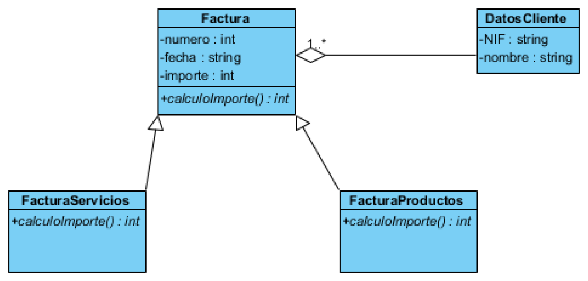
Con la agregación ya aplicada, el diagrama muestra el rombo en el extremo de Factura, que es el objeto base de la relación, y una multiplicidad 1..* sobre la línea. La lectura es que una factura agrega uno o más registros de datos del cliente.
Conviene hacer aquí un inciso que se plantea con frecuencia en los exámenes. La justificación que suele darse para elegir agregación es que el objeto agregado solo tiene sentido si existe la factura, y ese razonamiento describe en realidad una composición, no una agregación. La diferencia entre ambas está precisamente en qué ocurre al destruir el objeto base: en la composición el incluido desaparece con él, y en la agregación sobrevive. Por eso, antes de decidir el tipo de relación, la pregunta que hay que hacerse no es "¿tiene sentido por sí solo?", sino "¿qué pasa con el objeto incluido cuando desaparece el objeto base?". En este ejemplo el rombo vacío de la agregación es el que aparece dibujado en el modelo de referencia, y esa es la elección que reproduciremos.
Por otra parte, el enunciado especifica que se guarda el último número de factura de servicios y también el último número de factura de productos. Es necesario, entonces, crear un nuevo atributo ultimoNumero en la clase FacturaServicios y en la clase FacturaProductos. Aprovecharemos para añadir de paso los métodos de acceso de todos los atributos, los conocidos setters y getters.
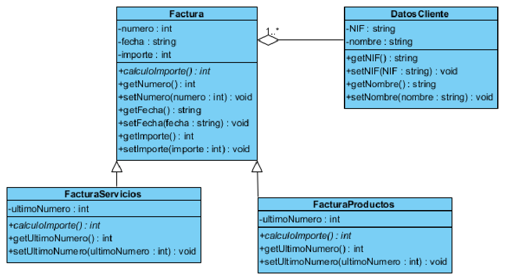
El diagrama crece rápido con esta operación, y ese crecimiento es una lección en sí mismo. Factura pasa a mostrar los métodos getNumero(), setNumero(), getFecha(), setFecha(), getImporte() y setImporte(), y cada hija incorpora los suyos, incluidos los correspondientes a ultimoNumero. Es el momento de decidir en cada caso qué atributos merecen acceso público y cuáles no: generar todos los accesos por rutina es cómodo, pero abre la puerta a que cualquier parte del programa modifique el estado interno de un objeto sin pasar por las reglas que ese objeto debería controlar.
La clase asociativa
El enunciado continúa explicando que hay una lista de servicios con la descripción y el precio por hora de cada uno. Por tanto, es necesario crear una nueva clase llamada Servicio, que contendrá dos atributos: descripción y precioHora.
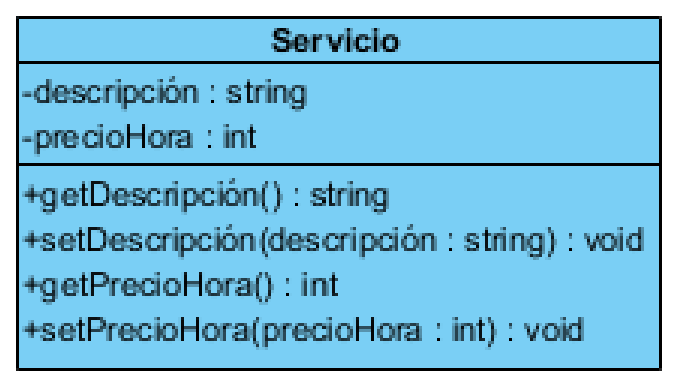
La clase Servicio aparece aislada en el diagrama, con sus dos atributos privados y los cuatro métodos de acceso. Es una clase independiente porque los servicios existen con independencia de las facturas: el catálogo de precios es el mismo para todas.
El enunciado sigue diciendo que cada factura de servicios tiene una lista de servicios con la fecha de prestación y el número de horas, y que en una factura puede haber más de una prestación del mismo servicio. Ese "más de una prestación del mismo servicio" es la clave del problema, y obliga a crear una clase asociativa llamada Horas, con los atributos fechaPrestacion y numero.
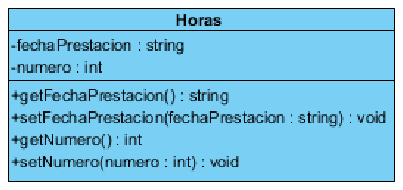
La clase Horas es el ejemplo perfecto de por qué existe la figura de la clase asociativa. Las horas trabajadas no pertenecen al servicio, porque un mismo servicio se presta muchas veces; y tampoco pertenecen a la factura como atributo simple, porque una factura tiene varias prestaciones distintas. El dato pertenece al vínculo entre la factura de servicios y el servicio prestado, y ese vínculo es lo que se modela como clase.
Las asociaciones se representan como líneas continuas, y el resultado de incorporar las dos clases nuevas sería el siguiente.
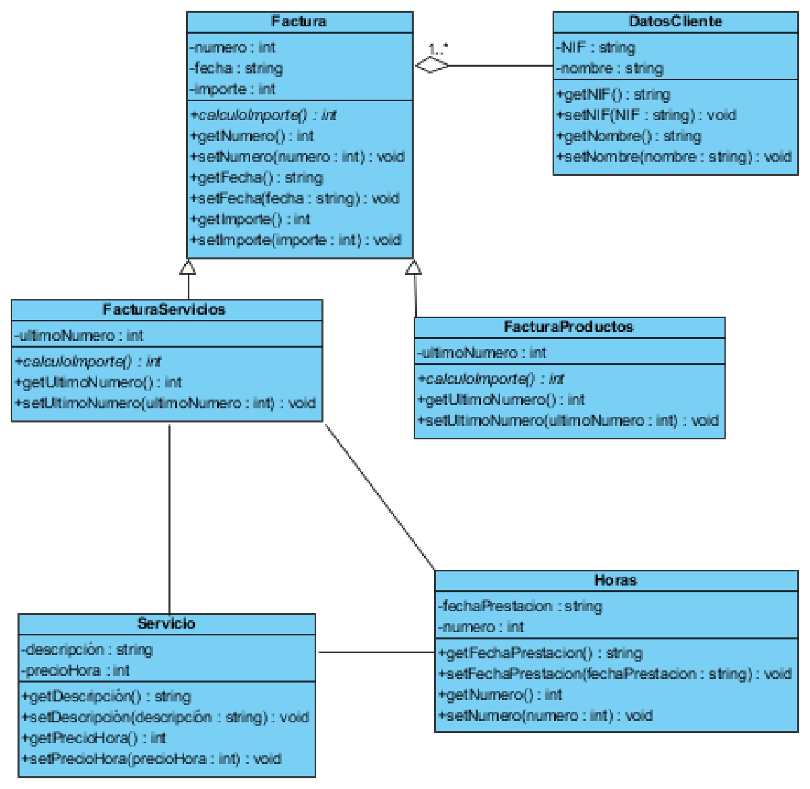
El diagrama es ya un modelo completo y funcional: Factura en la parte superior con su agregación hacia DatosCliente, la herencia hacia FacturaServicios y FacturaProductos, y en la parte inferior Servicio y Horas conectados con las asociaciones correspondientes. Merece la pena observar cómo la herencia se lee de abajo hacia arriba y la agregación de izquierda a derecha, y cómo las multiplicidades van siempre en el extremo opuesto al que se está leyendo.
La composición
Continuando con el enunciado, este especifica que las facturas de productos, para cada producto (y en cada factura hay al menos uno), tienen la descripción, el precio unitario y la cantidad. Es necesario, por tanto, crear una nueva clase llamada ProductoFactura, con los atributos descripción, precioUnidad y cantidad.
En este caso se trata de una composición, porque es una relación más fuerte que la agregación. FacturaProductos tiene sentido por sí misma, pero está compuesta de ProductoFactura, que aporta la descripción, el precio y la cantidad de la factura. La línea de producto no existe fuera de la factura que la contiene, y ese detalle es el que marca la diferencia.
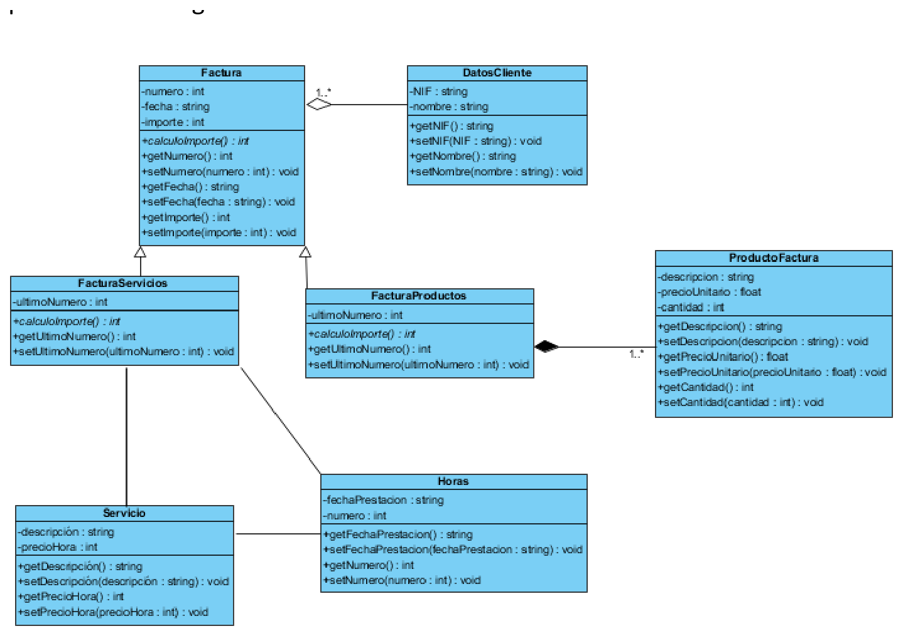
El diagrama final muestra el rombo relleno del lado de FacturaProductos y la asociación hacia ProductoFactura. Con esta última pieza el modelo queda cerrado y cubre todos los requisitos del enunciado: los datos comunes de cualquier factura en la clase madre, el cálculo del importe delegado a las hijas, los datos del cliente agregados en su propia clase, el catálogo de servicios, las horas de cada prestación modeladas como clase asociativa y las líneas de producto modeladas como composición.
Generar código desde el archivo de Dia
Dia guarda el diagrama en formato XML, y ese detalle tiene una consecuencia aprovechable: como el archivo contiene la estructura del modelo en un formato legible por máquina, existen utilidades capaces de leerlo y escribir el esqueleto del código. La más conocida es dia2code, una pequeña herramienta de línea de comandos que genera ficheros fuente en varios lenguajes, entre ellos Java, a partir de un diagrama .dia:
El resultado son los ficheros .java de las clases del diagrama, con sus atributos, sus tipos y sus métodos de acceso, y con la herencia ya declarada mediante la cláusula extends. Es exactamente la misma frontera que vimos al generar código en IntelliJ: la herramienta escribe la estructura y deja pendiente la lógica, porque el cuerpo de calculoImporte() no se puede deducir de un dibujo.
Conviene ser honesto sobre el alcance de esta utilidad. Dia2code es un programa pequeño y veterano: reconoce los elementos básicos del diagrama y un par de estereotipos, como «Interface», pero no es un entorno de ingeniería de ida y vuelta como los que existen en el mercado, y su vocabulario de opciones es limitado. Sirve perfectamente para el objetivo del curso, que es comprobar que del modelo se puede obtener código, y para no escribir a mano el esqueleto de veinte clases. Si la distribución que usas no lo incluye, su código fuente está publicado y se compila en un minuto.
Otras herramientas de modelado
Dia es la herramienta que hemos usado porque cubre las dos familias de diagramas UML y porque es libre y ligera, pero no es la única opción. Conocer el panorama ayuda a elegir con criterio, porque cada familia de herramientas resuelve un problema distinto.
| Herramienta | Tipo | Coste | Cuándo elegirla |
|---|---|---|---|
| Dia | Aplicación de escritorio, con hoja UML completa | Libre (GPL) | Para dibujar el modelo desde cero, antes de programar |
| IntelliJ IDEA (módulo Diagrams) | Dentro del IDE | Ultimate, gratuita con el Pack Educativo de JetBrains | Para leer el código que ya existe y mantenerlo documentado |
| draw.io (diagrams.net) | Web y escritorio, propósito general | Gratuita | Diagramas rápidos que tienen que acabar incrustados en documentación |
| StarUML | Aplicación de escritorio, orientada a UML | De pago, con versión de prueba | Modelado UML estricto en local, sin depender de servicios web |
| Papyrus | Aplicación de escritorio sobre Eclipse | Libre | Entornos que ya trabajan sobre Eclipse y necesitan un modelado formal |
| Umbrello | Aplicación de escritorio | Libre | Alternativas ligeras de código abierto, con generación de código integrada |
| PlantUML y Mermaid | Basadas en texto | Libres | Diagramas que tienen que vivir dentro de un repositorio de código |
Las dos últimas merecen un comentario aparte, porque representan una forma de trabajar distinta. En lugar de dibujar cajas con el ratón, se escribe un texto con una sintaxis sencilla y la herramienta lo convierte en el diagrama. Un ejemplo de Mermaid, el mismo lenguaje que se usa para dibujar el flujo de ramas en el apartado de control de versiones, sería este:
classDiagram
class Factura {
<<abstract>>
-numero : int
-fecha : String
-importe : int
+calculoImporte() int
}
class FacturaServicios {
-ultimoNumero : int
}
class FacturaProductos {
-ultimoNumero : int
}
Factura <|-- FacturaServicios
Factura <|-- FacturaProductos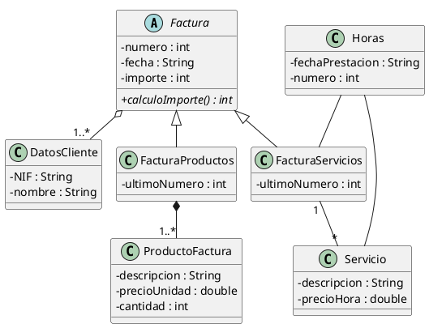
La figura recoge ese mismo modelo generado con una herramienta basada en texto, en este caso PlantUML.
La ventaja de este enfoque enlaza directamente con lo que ya sabemos de Git. Un diagrama guardado como imagen es un fichero binario: Git lo almacena, sí, pero no puede mostrar qué ha cambiado entre dos versiones, y una revisión en un pull request se limita a decir «esta imagen ha cambiado». Un diagrama escrito en texto sí se puede comparar línea a línea, de modo que una modificación en la relación entre dos clases aparece como una línea eliminada y otra añadida, igual que cualquier otra parte del código. Para un proyecto que va a evolucionar durante años, esa diferencia pesa más de lo que parece.
Queda por mencionar el caso de los entornos integrados de desarrollo, que ya hemos recorrido en la página anterior. Muchos IDE incorporan de serie alguna vista de clases o alguna utilidad para generar un diagrama a partir del código del proyecto, y los que no la traen permiten añadirla instalando un módulo o un plugin. Es una vía cómoda porque no obliga a cambiar de aplicación, y tiene el mismo alcance que la ingeniería inversa: sirve para entender y documentar un código que ya existe, no para diseñarlo antes de escribirlo. Antes de elegir herramienta conviene, por tanto, hacerse una pregunta muy concreta: ¿el diagrama va a nacer antes que el código o va a nacer después de él?